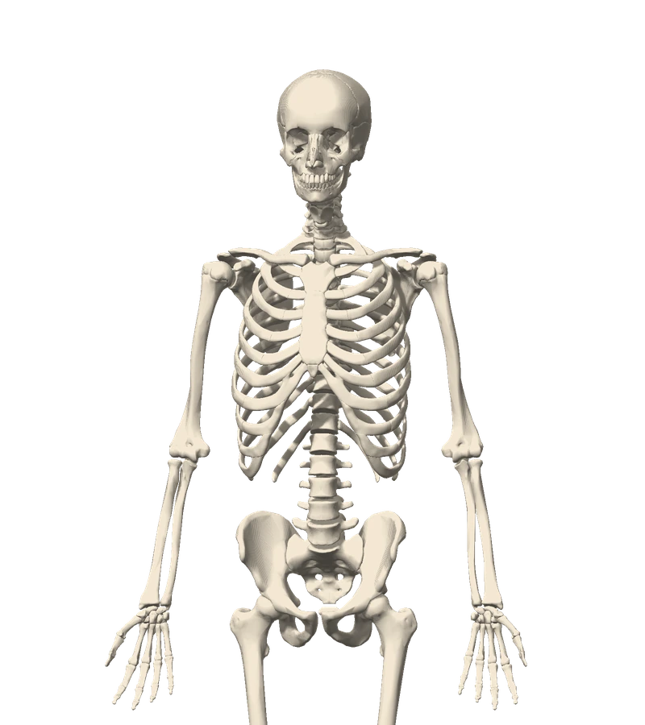

SEU LABORATÓRIO DE ANATOMIA
O corpo humano,
em camadas.
Explore estruturas em 3D, descubra suas relações e estude cada detalhe no seu ritmo.
2.122 estruturas indexadas05 sistemas em 3D
FIG. 01

Sistema esqueléticoVista anterior · modelo do atlas3D ↗
ESCOLHA POR ONDE COMEÇAR
Sistemas anatômicos
02 disponíveis / 03 em préviaUm modelo. Diferentes formas de aprender.
Sistema esquelético